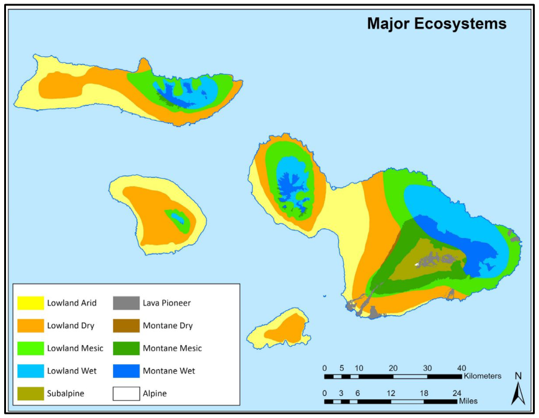
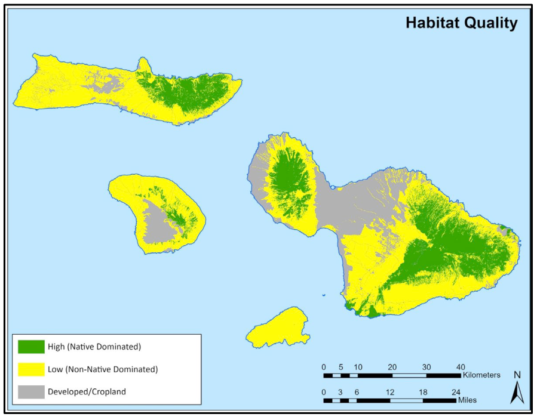
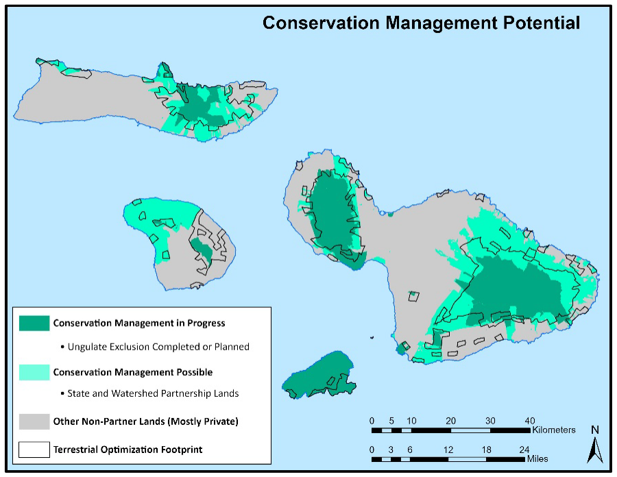
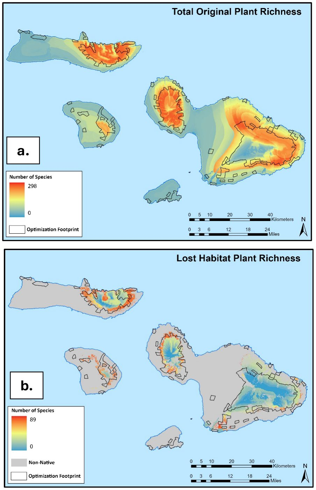
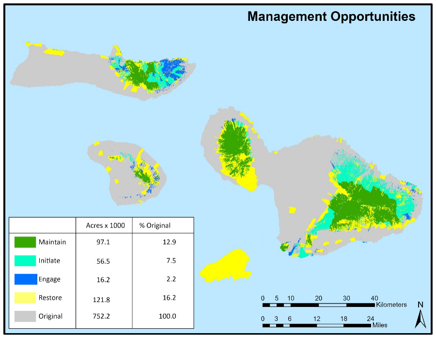
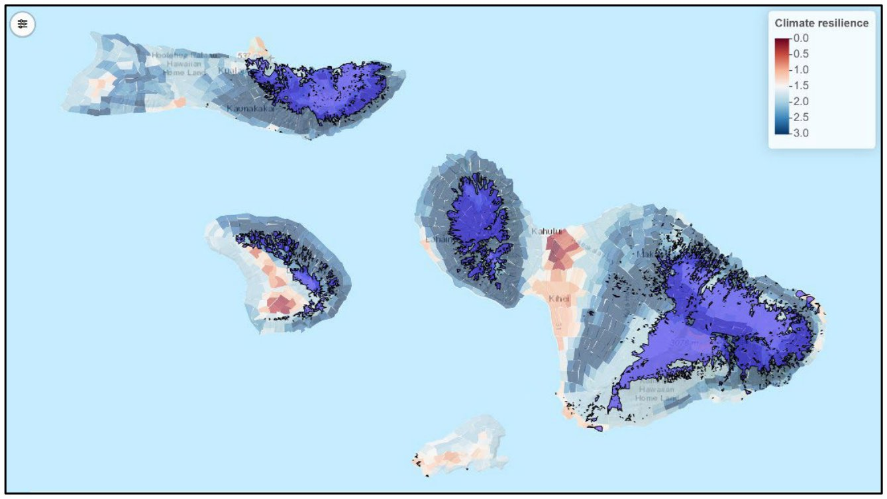
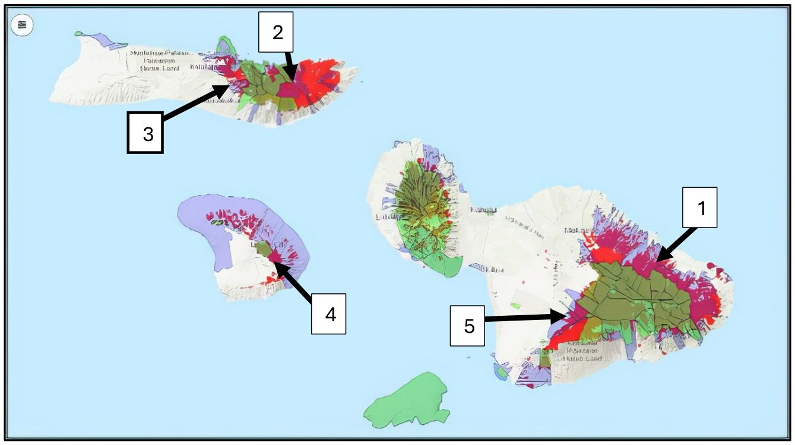
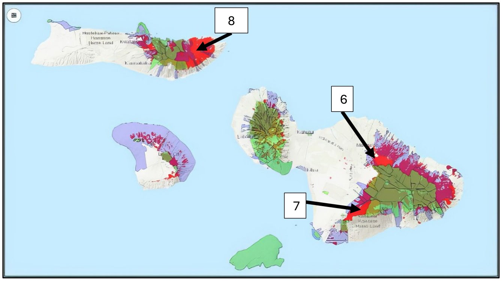

Why ecosystems matter
Conserving native ecosystems helps prevent more plants and animals from declining to the point of being at risk of extinction. Protected and restored ecosystems also help Maui Nui's 442plan p.14, line 820 at-risk species recover and stay recovered. They provide connectivity, buffers from threats, redundancy, and room for populations to grow.plan p.14, lines 818-822
The MNLCP's ecosystem work looks for three things: remaining good-quality native ecosystems and unique communities, the conservation strategies that will most help reach ecosystem goals, and conservation opportunities based on habitat quality, the conservation status of lands, and an area's importance to at-risk species and other values.plan p.14, lines 825-833
The ecosystem targets cover both near-term priorities, which focus on stopping the loss of biodiversity, and long-term goals for the broader recovery of working native ecosystems.plan p.88, lines 3552-3555
The terrestrial ecosystems of Maui Nui
The islands of Maui Nui (Hawaiian for "Big Maui") are Molokaʻi, Lānaʻi, Maui, and Kahoʻolawe. Together they span almost the whole range of environments found across the Hawaiian Islands, from tropical coastlines and young lava flows to rainforests and an alpine summit.plan p.88, lines 3534-3538
For most of their history these four islands were joined as one large island, Maui Nui, which at its largest was bigger than today's Hawaiʻi Island. As the land sank, the connections between the islands went under the sea. During the low sea levels of glacial periods the islands reunited, as recently as 20,000 years ago.plan p.88, lines 3538-3544 Because of this shared history, the islands share many of the same plants and animals.plan p.88, lines 3544-3545
The MNLCP looks at Hawaiian ecosystems in terms of where the major ecosystems are, the quality of their habitat, the potential to manage them, and principles of landscape ecology. These landscape-scale assessments are tied to the plan's species-based work so that management actions can be prioritized and coordinated.plan p.88, lines 3547-3552
How ecosystems were delineated
The plan maps ten ecosystems.plan p.88, line 3558 They start from the moisture zones mapped by Price et al. (2012), which are then split into four elevation bands using a USGS digital elevation model:plan p.88, lines 3558-3561
- Lowland: 0 to 1,000 m
- Montane: 1,000 to 2,000 m
- Subalpine: 2,000 to 3,000 m
- Alpine: above 3,000 mplan p.88, lines 3560-3561
The Wet and Mesic zones reach only slightly into the Subalpine band, so those areas are folded into Montane Wet and Montane Mesic. That gives nine ecosystems defined by climate. The tenth, Lava Pioneer, is kept separate because its young lava substrates create unique growing conditions.plan p.88, lines 3561-3567

Special ecological features
Some important habitats are too small or too patchy to map at the landscape scale. The plan recognizes five of these special features, each supporting unique plants and animals:plan p.89, lines 3572-3588
- Coastal areas: a varied mix of cliffs, sand dunes and wetlands.
- Anchialine pools: landlocked pools linked to the ocean underground through porous volcanic rock. They occur in only a few places in the world and hold unique animals.
- Lava tubes: caves formed by recent volcanic activity, home to unique animals.
- Cliffs: long a refuge for unique Hawaiian plants. Recent exploration with drones has found species that had never been documented.
- Bogs: small, patchy wetlands in poorly drained, wet uplands with unique plants and animals.plan p.89, lines 3574-3588
Some of these features have known locations, but their extent has not been mapped well, so the plan assesses them only in terms of general conditions.plan p.89, lines 3588-3591
Maui Nui ecosystems and special features: original extent, high-quality habitat remaining, MNLCP management goal, and island distribution (plan Table 28)
| Ecosystem | Original extent (×1,000 acres) | % of original remaining (high quality) | MNLCP goal: % managed | Molokaʻi | Lānaʻi | Maui | Kahoʻolawe | Mapped |
|---|---|---|---|---|---|---|---|---|
| Lowland Arid | 185.1 | 0.5 | 40 | ✓ | ✓ | ✓ | ✓ | Yes |
| Lowland Dry | 222.9 | 2.1 | 40 | ✓ | ✓ | ✓ | ✓ | Yes |
| Lowland Mesic | 120.2 | 21.3 | 40 | ✓ | ✓ | ✓ | Yes | |
| Lowland Wet | 95.2 | 59.1 | 59 | ✓ | ✓ | Yes | ||
| Montane Dry | 1.4 | 56.4 | 56 | ✓ | Yes | |||
| Montane Mesic | 46.5 | 29.4 | 29 | ✓ | ✓ | Yes | ||
| Montane Wet | 41.1 | 91.6 | 91 | ✓ | ✓ | ✓ | Yes | |
| Subalpine (Dry) | 26 | 83.9 | 83 | ✓ | Yes | |||
| Alpine (Arid) | 0.1 | 81.2 | 81 | ✓ | Yes | |||
| Lava Pioneer | 12.4 | 75.2 | 75 | ✓ | Yes | |||
| Coastal | – | – | – | ✓ | ✓ | ✓ | ✓ | No |
| Anchialine pools | – | – | – | ✓ | ✓ | No | ||
| Lava tubes | – | – | – | ✓ | ✓ | No | ||
| Cliffs | – | – | – | ✓ | ✓ | ✓ | No | |
| Bogs | – | – | – | ✓ | ✓ | ✓ | No |
Ecosystems at a glance
Lowland Arid. The most reduced and degraded ecosystem. It is poorly mapped and very little habitat is left. Restoration, prioritized within the recovery footprint, is the main opportunity.plan p.90, lines 3620-3622
Lowland Dry. Once the most extensive ecosystem, it is now down to about two percent of its original area. It is a hotspot for rare species, and restoration is the key opportunity. Better high-resolution mapping is needed to find remaining pockets of native vegetation.plan p.90, lines 3624-3627
Lowland Mesic. A fragmented ecosystem. Areas mapped as "native dominated" often have a heavy understory of invasive plants, so "Restore" describes much of it better than "Initiate." It had the highest original plant diversity, and likely the highest invertebrate diversity, which makes targeted restoration especially valuable.plan p.90, lines 3629-3633
Lowland Wet. Has the largest share remaining and is the least invaded of the lowland ecosystems. Much good-quality habitat on partner lands is not yet free of feral ungulates (non-native hoofed animals such as goats, deer and pigs)plan p.4, lines 488-489, so "Initiate" is the biggest opportunity.plan p.90, lines 3634-3637
Montane Dry. Common on Hawaiʻi Island, but on Maui Nui it is confined to a narrow zone on East Maui, with little native-dominated vegetation left.plan p.90, lines 3639-3640
Montane Mesic. Much of it was converted to cattle pasture, so little remains. As ranching declines, there is a strong restoration opportunity: many old pastures still have native trees and few invasive woody plants, so controlling grass and planting natives is cost-effective.plan p.90, lines 3642-3645
Montane Wet. Keeps a high share of its original habitat and strong plant diversity, and is core habitat for most remaining forest birds. "Maintain" is the priority, though climate change may bring new threats, such as pressure from lowland invasive plants, that call for more active management.plan p.91, lines 3651-3654
Subalpine. Also high quality and largely intact. Most of it is protected within Haleakalā National Park and is largely free of ungulates, so "Maintain" is again the priority. Climate change is a looming risk to its narrow climate niches.plan p.91, lines 3655-3657
Alpine. A tiny area at the summit of Haleakalā. Less original habitat remains than expected because of roads, parking lots and telescope facilities. Climate change is the main concern: the area is small and its species cannot move elsewhere.plan p.91, lines 3659-3662
Lava Pioneer. Found at low elevations, but more native-dominated than the other lowland ecosystems.plan p.91, lines 3664-3665
Special ecological features. A varied group tied together by the importance of water. Anchialine pools depend on salinity driven by groundwater and are vulnerable to pollution. Ungulates rooting in bogs can change drainage and destroy rare plants. Caves are damaged by ungulates, disturbance above ground, and changes in groundwater. Protecting these features often means protecting the whole watershed, well beyond their own boundaries.plan p.91, lines 3667-3673
Habitat quality
Hawaiian vegetation ranges from mostly native to entirely dominated by invasive species. Using vegetation cover classes from Jacobi et al. (2017), the plan sorts land into three habitat quality zones:plan p.91, lines 3675-3678
- High: dominated by native plants
- Low: dominated by non-native plants
- Developed or croplandplan p.91, lines 3677-3678
The source map did not classify "sparsely vegetated" areas. Those inside the Lava Pioneer ecosystem were counted as High quality and those elsewhere as Low, based on vegetation surveys.plan p.91, lines 3678-3682

The management landscape
Feral ungulates are a primary cause of damage to Hawaiian ecosystems, and invasive species mean that simply protecting land from development is not enough. Land needs active management.plan p.92, lines 3691-3702 Building on the earlier Hawaiʻi Gap Analysis Program (HIGAP), the plan sorts land into three tiers of management potential:plan p.92, lines 3691-3697
- Ongoing ungulate exclusion. Areas where feral ungulates have been kept out by fencing and removal. These have the highest management potential. They are freed from ungulate damage, and other conservation work, such as planting endangered plants, is more likely to succeed there.plan p.92, lines 3699-3707
- Conservation-oriented management potential. Areas where managers have the authority to do conservation management, such as fencing and removing ungulates, but are not yet doing it. These include lands managed by certain State of Hawaiʻi agencies, especially the Department of Land and Natural Resources, and lands under formal agreements, especially Watershed Partnerships, which co-manage public and private lands for ecosystem health.plan p.92-93, lines 3709-3718
- Other areas. All land without ongoing ungulate exclusion or a conservation-oriented management goal.plan p.93, lines 3719-3720

Four kinds of management opportunity
Overlaying habitat quality on management potential shows what kind of opportunity each area offers.plan p.93, lines 3722-3728
Management opportunities by habitat quality and management potential (plan Tables 29 and 31)
| Management potential | Low-quality habitat | Medium-quality habitat | High-quality habitat |
|---|---|---|---|
| Managed (ungulates excluded) | Unlikely combination (roads and infrastructure inside managed areas) | Restore within ungulate-excluded areas | 1. Maintain: managed high-quality habitat |
| Unmanaged, partner lands | Management or restoration unlikely (agricultural areas) | Restore within the recovery footprint | 2. Initiate: management possible now |
| Unmanaged, other ownership | Management or restoration unlikely (urban and agricultural areas) | Restore within the recovery footprint | 3. Engage: management possible if land is secured |
Low-quality habitat outside partner lands and without at-risk species offers more limited opportunities.plan p.93, lines 3729-3731
Biodiversity hotspots
To add context, the plan mapped overall plant diversity. Each of 1,087plan p.94, line 3775 plant species' range maps (Price et al. 2012) was overlaid, and the number of species was counted in every 30 m grid cell.plan p.94, lines 3771-3776
A second map repeated this for the quarter of species that have lost the most habitat, measured as the share of their original habitat no longer in high-quality condition.plan p.94, lines 3776-3778 Total diversity reflects climate, island history and the age of the land. Species with the greatest habitat loss are concentrated in the ecosystems most disrupted by people.plan p.94-95, lines 3778-3787

Landscape patterns of management opportunity
Combining these layers shows a landscape pattern of management opportunities that differs by ecosystem.plan p.96, lines 3812-3814 The MNLCP's long-term goal is to restore all ecosystems to a level that supports all of Maui Nui's terrestrial and freshwater biodiversity. Some ecosystems have less than one percent of their original area left as high-quality native habitat.plan p.96, lines 3814-3818
The pattern is clear in the numbers. In the upper elevations, most of what remains is already managed: three quarters of Montane Wet and almost two thirds of Subalpine fall in the "Maintain" category. In the lowlands, the largest opportunities are restoration, and in Lowland Wet the biggest opportunity is to initiate management on good habitat that is not yet protected.plan p.96, Table 30, lines 3831-3840; p.90 lines 3634-3637

Management opportunities and restoration targets by ecosystem (plan Table 30)Details
Area in each opportunity category, in thousands of acres and as a percent of the ecosystem's original extent.
Management opportunities and restoration targets by ecosystem type (plan Table 30)
| Ecosystem | Maintain (×1,000 ac) | Maintain (% of original) | Initiate (×1,000 ac) | Initiate (%) | Engage (×1,000 ac) | Engage (%) | Restore (×1,000 ac) | Restore (%) |
|---|---|---|---|---|---|---|---|---|
| Lowland Arid | 0 | 0 | 0.4 | 0.2 | 0.4 | 0.2 | 27.4 | 14.8 |
| Lowland Dry | 1.1 | 0.5 | 1.3 | 0.6 | 2.3 | 1 | 35.1 | 15.7 |
| Lowland Mesic | 11.8 | 9.8 | 7.5 | 6.3 | 6.2 | 5.2 | 27.5 | 22.9 |
| Lowland Wet | 20.4 | 21.4 | 30.2 | 31.7 | 5.7 | 6 | 10.7 | 11.2 |
| Montane Dry | 0 | 0 | 0 | 0 | 0 | 0 | 0.6 | 41.6 |
| Montane Mesic | 10.4 | 22.4 | 3.2 | 6.8 | 0.1 | 0.1 | 13.5 | 29.1 |
| Montane Wet | 30.8 | 75 | 6.5 | 15.8 | 0.3 | 0.8 | 3 | 7.4 |
| Subalpine | 16.9 | 65 | 4.8 | 18.3 | 0 | 0 | 4 | 15.5 |
| Alpine | 0.1 | 81.2 | 0 | 0 | 0 | 0 | 0 | 0 |
| Lava Pioneer | 5.5 | 44.9 | 2.7 | 21.5 | 1.1 | 8.8 | 0.6 | 4.7 |
Maintain, Initiate and Engage are high-quality habitat; Restore is medium-quality habitat inside ungulate-excluded areas or the recovery footprint.plan p.94, Table 29, lines 3743-3768
Overall priorities for terrestrial ecosystems
Setting priorities among ecosystems is hard, but the plan gives three general guidelines:plan p.97, lines 3848-3850
- Protect what is still good first. Protecting and managing existing high-quality habitat generally comes before restoring degraded areas. This matters most in ecosystems with less than 40 percent of their original area left as high-quality habitat.plan p.97, lines 3851-3854
- Start where management is already possible. Managing high-quality areas already in conservation-oriented status can usually be done faster than elsewhere.plan p.97, lines 3855-3856
- Restore where it counts. Restoring areas that matter for species recovery, connectivity, high species diversity or climate resilience is more important than restoring areas that only add acres toward an ecosystem target.plan p.97, lines 3857-3859
Climate change patterns
Climate change is an ongoing threat even inside high-quality native ecosystems. Overlaying projected climate change on the map of high-quality habitat shows that most of this habitat is changing more slowly than the Maui Nui average, but it is still changing.plan p.97-98, lines 3895-3900; Figure 26 caption lines 3907-3909 Managers should track these changes and decide whether management needs to adjust.plan p.98, lines 3900-3902
Most remaining high-quality native habitat is changing more slowly than the rest of Maui Nui under climate change, but it is still changing, and management will need to keep pace.

Priorities for managing key landscape areas
Maintain
Managed (ungulate exclusion) + high-quality habitat
Maintain managed high-quality habitat that has ungulate fences. Existing management should continue.
Initiate
Unmanaged partner lands in conservation status + high-quality habitat
Initiate management on lands in conservation status: identify existing native ecosystems that are in conservation status but not yet fenced. Maui Nui has extensive areas in conservation status that are not protected from ungulate damage, and some are important for both ecosystems and at-risk species recovery.
Key areas: Windward Haleakalā (East Maui); Molokaʻi (first of two areas); Molokaʻi (second of two areas); Lānaʻihale (Lānaʻi); Not named in plan text; southern/leeward flank of Haleakalā on Figure 27 (DOFAW to confirm)
Engage
Unmanaged other ownership + high-quality habitat
Engage with potential partners to implement management or include areas in conservation status.
Key areas: Above Makawao, windward Haleakalā; Kahikinui area; Eastern Molokaʻi
Restore
Medium-quality habitat within ungulate-excluded areas or the recovery footprint
Undertake restoration of medium-quality habitats to help meet ecosystem targets for area, as well as other values, especially to support the recovery of at-risk species. Restoring areas important for species recovery, connectivity, high species diversity or climate resilience comes before areas that only add acres.
Within this framework, managers can use the Adaptive Conservation Planner to pick out larger opportunity areas across the landscape. Comparing where the management categories, ungulate fences and native ecosystems are helps rank areas within a category, or even across categories.plan p.98, lines 3913-3919 The plan sets out four priorities, in order:
Priority 1: Maintain
Keep managing high-quality habitat that is already fenced against ungulates. Existing management should continue.plan p.98, lines 3920-3921 This is the highest-quality habitat that is already protected, and keeping it intact comes first.plan p.97, lines 3851-3854; Table 31 lines 3862-3893
Priority 2: Initiate
Start management on high-quality habitat in lands already in conservation status but not yet fenced. Maui Nui has large areas in conservation status that are not protected from ungulate damage. Some are important for both ecosystems and at-risk species recovery.plan p.98-99, lines 3922-3926, 3928-3929 The plan highlights five numbered areas, including windward Haleakalā, two areas on Molokaʻi, and Lānaʻihale.plan p.99, Figure 27, lines 3928-3958

Priority 3: Engage
Work with potential partners to manage high-quality habitat or bring it into conservation status. Key areas for engagement include eastern Molokaʻi, the slopes above Makawao on windward Haleakalā, and the Kahikinui area.plan p.99, lines 3959-3963; Figure 28, lines 3983-3990

Priority 4: Restore
Restore medium-quality habitat to help meet ecosystem area targets and other values, especially recovery of at-risk species.plan p.100, lines 3993-3995 Restoration focuses on medium-quality habitat inside ungulate-excluded areas or within the recovery footprint.plan p.94, Table 29, lines 3743-3768 Areas that support species recovery, connectivity, high diversity or climate resilience come before areas that only add acres.plan p.97, lines 3857-3859
Methods in briefDetails
- Ecosystem map. Moisture zones from Price et al. (2012) split by elevation (USGS digital elevation model) into Lowland, Montane, Subalpine and Alpine bands. Wet and Mesic subalpine areas merged into Montane Wet and Montane Mesic, with Lava Pioneer added as a tenth ecosystem for its unique substrate.plan p.88, lines 3558-3567
- Habitat quality. Cover classes from Jacobi et al. (2017) grouped into High (native dominated), Low (non-native dominated) and Developed/Cropland. Sparsely vegetated areas inside Lava Pioneer counted as High, elsewhere as Low.plan p.91, lines 3675-3682
- Management potential. Three tiers (ongoing ungulate exclusion; conservation-oriented management potential; other), adapted from the Hawaiʻi Gap Analysis Program's approach to conservation designations (Gon et al. 2006).plan p.92-93, lines 3691-3720
- Opportunities. Habitat quality and management potential layers converted to raster and intersected in ArcGIS Pro to map each combination (Table 29).plan p.93, lines 3722-3728
- Hotspots. Range maps for 1,087 plant species summed per 30 m cell, plus a separate map for the 25 percent of species with the greatest habitat loss.plan p.94, lines 3771-3778
- Opportunity areas. High-quality native habitat overlaid with conservation areas and ungulate exclusion, showing habitat that is (a) outside conservation areas and unfenced, (b) inside conservation areas but unfenced, (c) inside conservation areas and fenced, and (d) fenced but not in conservation-oriented status.plan p.99, Figure 27 caption, lines 3951-3958